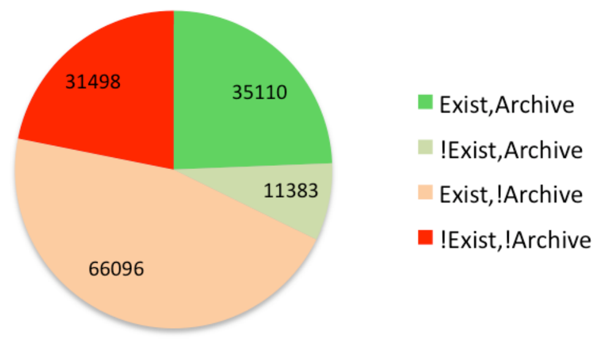

"Digital preservation is access ...
in the future."
Availability of URLs cited in arXiv
http://info.cern.ch/hypertext/WWW/TheProject.html
http://line-mode.cern.ch/
"... digital information lasts forever--or five years, whichever comes first"
or not

Image Credits
- Aaron Swartz by Sage Ross
- Marshall McLuhan from the National Library of Canada
- Link Clump by Siaron James
- Analyzing the Persistence of Referenced Web Resources with Memento by Robert Sanderson, Mark Phillips, Herbert Van de Sompel.
- Brewster Kahle by Joi Ito.
- Hacking by Jeremy Keith.
- Paul Bausch by Paul Bausch.
- 3Com Campus in Massachusetts: 1999 by Jim Grisanzio.
- In front of Johann von Neumann-Haus by Anja Jentzsch.
- ROFLThing NYC, A Mini Conference on Internet Culture & Memes by Scott Beale.
- A photo of Mark Pilgrim by Tim Bray, taken at the ETech conference San Jose in March of 2006. by Tim Bray.
- why the lucky stiff + the foxes by Roo Reynolds.
- Why's (Poignant) Guide to Ruby by Why the Lucky Stiff.
- Dive into HTML 5 by Mark Pilgrim.
- Facebook Redesign by Ben Moss. Web Designer Depot.
- Twitter wants to play with the big boys by James Cox. Wall Street Journal.
- The Data Liberation Front Delivers Google Takeout
- Box by Michael Rowe, from the Noun Project.
{kind=link}
{kind=link}